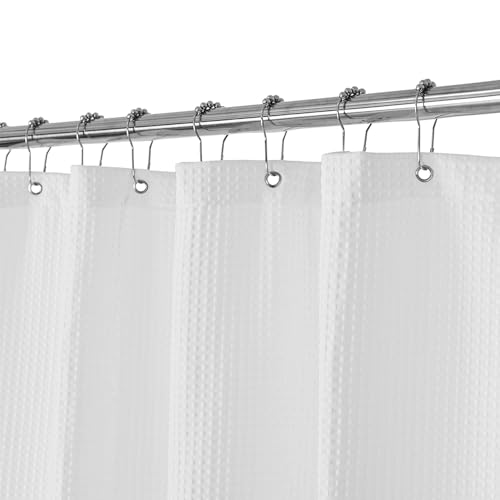
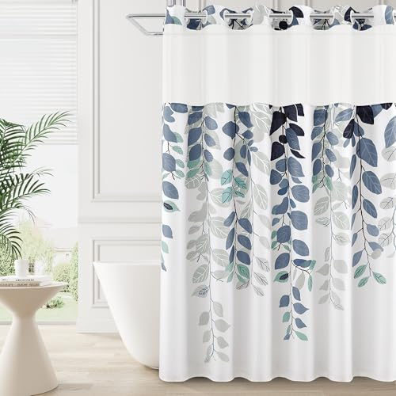
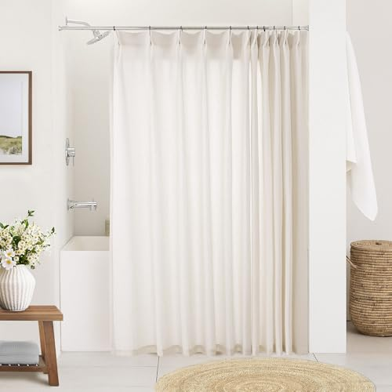
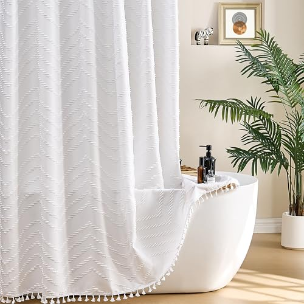
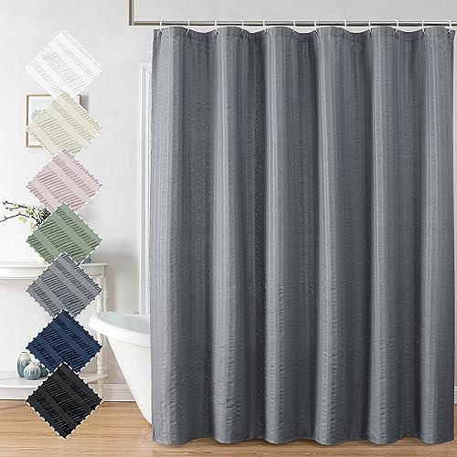
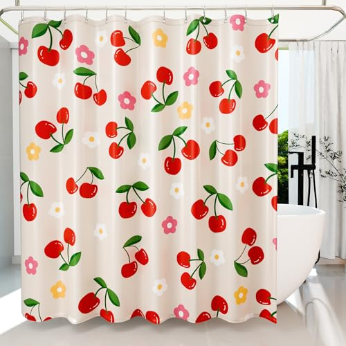
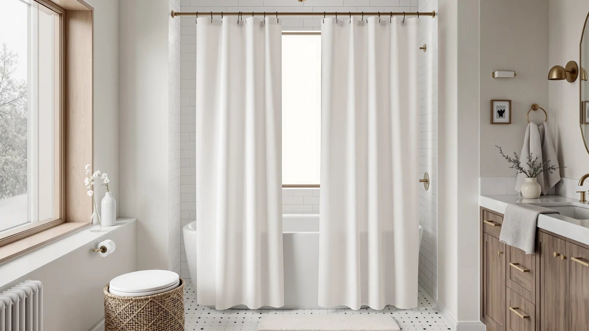
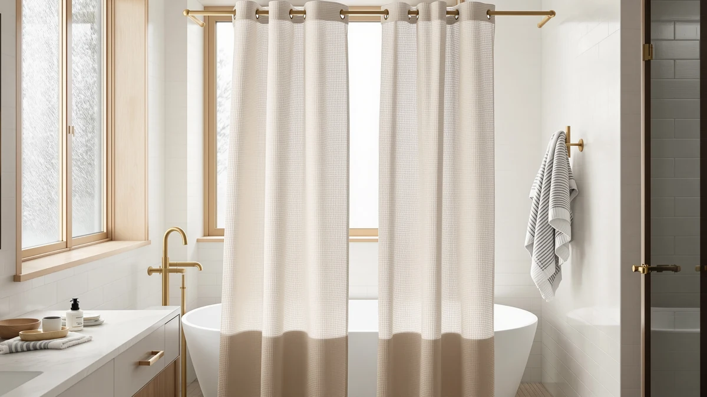
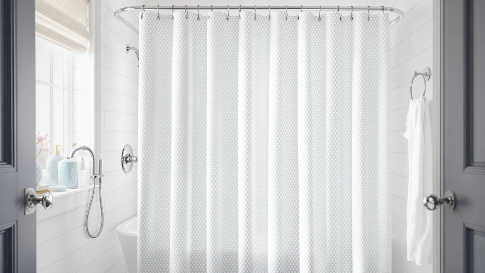

Pick a shower curtain by its material, not its pattern.
Most curtains look fine the day you hang them. The one that still hangs straight after months of washing and the one that clings, mildews at the hem or comes up short differ in three places: the material and whether it needs a liner, the hem that keeps it from billowing in, and a size that matches your rod and tub. We compare curtains and liners on those points, using spec sheets, current Amazon prices and what verified owners report.
Our 7 picks, side by side
From our full comparison of shower curtains. Each one wins a specific job.
| Pick | Product | Price | Buy |
|---|---|---|---|
| Our Pick | GORILLA GRIP Waffle Shower CurtainHotel-style, fast-drying, and machine washable | $24.95 | Check price |
| Best Value |  Barossa Design Waffle Weave White Shower Curtain Hotel Luxury QualityCheaper, proven, and nearly identical | $14.97 | Check price |
| Best No-Hook |  BOODII No Hook Shower Curtain with Snap in Liner Eucalyptus Shower CurtainHook-free, snap-top, and quick to hang | $32.28 | Check price |
| Best Splurge |  Natural Pinch Pleated Linen Curtains 72 Inches Long 72 Inch Wide for LivingUpscale, textured, and design-forward | $52.24 | Check price |
| Best Plain White |  Siiluminisoy White Shower Curtain Fabric Boho Shower Curtain Cloth TexturedSimple, white, and lightweight | $15.99 | Check price |
| Best Budget |  Aiyufeng Moga Grey Shower Curtain Hotel Luxury QualityCheap, neutral, and washable | $9.97 | Check price |
| Best Printed |  Anybar Fabric Shower Curtain Cute Floral Cherry Curtains Waterproof SoftPlayful, affordable, and printed | $12.99 | Check price |
Just published
New reviews and guides go up every day.

Bean Products Organic Cotton Narrow Shower Stall Curtain Liner Review

Barossa Design Waffle Weave Shower Curtain Review

Martha Stewart Cotton Floral Shower Curtain Review

Bean Products Natural Cotton Bathtub Shower Curtain Liner Review
Find the right shower curtain for your bathroom
Guides and reviews from across the site, grouped by the question they answer.
Size and fit
- The Best Shower Curtain Liners For clawfoot tubsComparison
- Best Shower Curtains for Wet RoomsComparison
- The Best Shower Curtain Liners For small bathroomsComparison
- Best Shower Curtain for Small SpaceComparison
- Best Shower Curtain for Low ThresholdComparison
- The Best Extra-wide Shower CurtainsComparison
+ 39 more in all articles
Liners
- The Best Magnetic Shower Curtain LinersComparison
- The Best Weighted Shower Curtain LinersComparison
- The Best Shower Curtain Liners Under $50Comparison
- The Best Shower Curtain Liners Under $30Comparison
- The Best Linen Shower Curtain LinersComparison
- Best Shower Curtain Liner That Doesn T Stick to YouComparison
+ 14 more in all articles
Hooks, rods and weighted hems
- Shower Curtain Effect: Why It Happens and How to Stop ItGuide
- Best Shower Curtain Rod for Tile WallComparison
- The Best Shower Curtain Hooks For kidsComparison
- Best Shower Curtain Rod for TileComparison
- The Best Peva Shower Curtain HooksComparison
- The Best Minimalist Shower Curtain HooksComparison
+ 48 more in all articles
Mold and cleaning
- How to Clean Shower Curtains Plastic: Complete GuideGuide
- Best Shower Curtain Material to Prevent MoldComparison
- Best Shower Curtains for HealthComparison
- Best Shower Curtain for Mold and Mildew: 7 Top PicksComparison
- Best Shower Curtain for Hard Water: 7 Top PicksComparison
- Best Shower Curtains for Mold Prevention: Expert GuideComparison
+ 3 more in all articles
Materials and alternatives
- Shower Curtains vs Regular Curtains: Which Is Better?Comparison
- Shower Curtains vs Glass Doors: Which Is Better?Comparison
- Shower Curtains vs Shower Doors: Which Is Better?Comparison
- The Best Plastic Shower CurtainsComparison
- Best Shower Curtain MaterialComparison
- Shower Curtain AlternativeComparison
+ 41 more in all articles
Style, sets and budget
- The Best Shower Curtains Under $50Comparison
- Best Shower Curtain ColorComparison
- Beautiful Shower CurtainComparison
- Nordic Shower CurtainComparison
- Best Shower Curtains for GardensComparison
- The Best Patterned Shower CurtainsComparison
+ 25 more in all articles
How we research
What we compare
- Material: polyester, cotton and linen usually need a liner behind them; vinyl, PEVA and EVA block water on their own.
- Size: most tub showers take a 70 or 72 by 72-inch curtain; stall showers and high rods need narrower or longer cuts.
- How it hangs: rings or a hookless top, and a weighted or magnetic hem that keeps it from billowing in.
- Price: Amazon's current price, checked every night.
- What verified owners report after months of daily use.
What we don't do
We don't run a lab, and we don't claim to have installed or handled these products ourselves. Our picks come from published specifications, current Amazon prices and what verified owners report again and again.
Every Amazon link on this site is an affiliate link. It never decides the ranking.
Common questions
Does a fabric shower curtain need a liner?
Usually, yes. Polyester, cotton and linen let some water through during a long shower, so a waterproof liner in PEVA, EVA or vinyl hangs on the tub side. Some fabric curtains are sold as water-repellent enough to use alone, so check the listing; our fabric vs PEVA comparison covers the trade-off.
What size shower curtain do I need?
Most tub showers take a standard 70 or 72 by 72-inch curtain. A stand-up stall usually needs a narrower curtain, often 54 by 78 inches, and a rod mounted higher than usual calls for an extra-long cut such as 72 by 84. Measure the rod width and the drop from the rod to the tub floor before you order; our size guide lists the common sizes.
How do I keep a shower curtain from getting moldy?
Let it dry between showers: pull it fully closed so the folds can air out, and run the exhaust fan. Machine-wash fabric curtains and washable liners regularly, following the care label, and replace a liner once mildew sets into the hem. Our guide to cleaning a shower curtain walks through it.